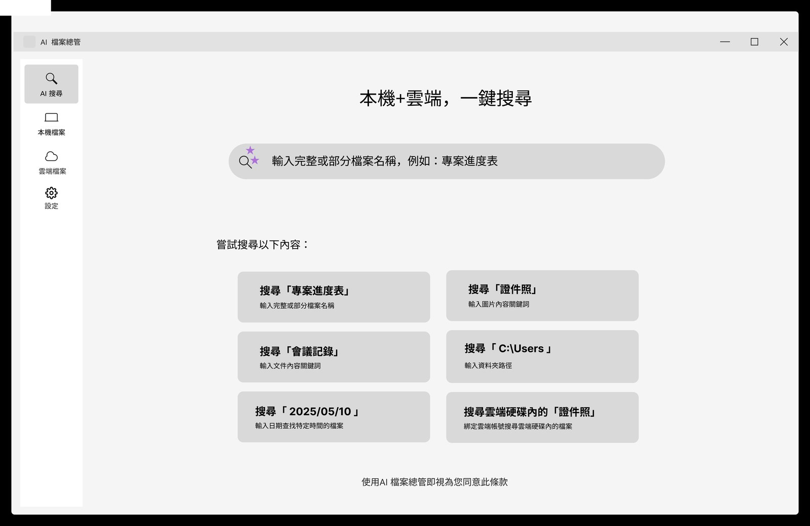
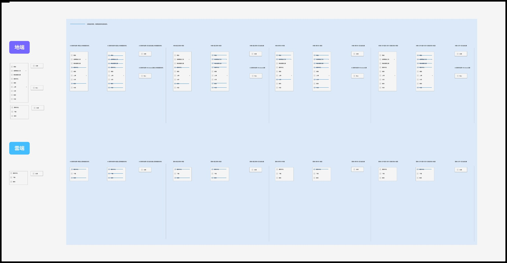

A search app that unifies local and cloud behind one query
一個把本機與雲端整合在單一查詢後的搜尋 App
File Search lets people query local and cloud files from one place, and ships pre-installed on ASUS commercial notebooks, AiOs and desktops from the 2026 line. It isn’t a feature buried in a menu — it’s a peer app inside MyExpert, sibling to Chat, Knowledge Hub and ExpertMeet. Because it runs on ordinary commercial machines, it has to stay useful without a dedicated server and without a power user babysitting it.
File Search 讓使用者在同一個地方查詢本機和雲端的檔案，並隨華碩 2026 年的商用筆電、一體機與桌機預載出貨。它不是埋在選單裡的某個功能，而是 MyExpert 裡和 Chat、Knowledge Hub、ExpertMeet 並列的一個 App。也正因為它跑在一般的商用機器上，就必須在沒有專屬伺服器、也沒有人在旁邊顧著的情況下，依然好用。
Fig. 1 — The core IA call. Four separate places to search collapse into one query returning a single ranked list with the source shown — and File Search is scoped as a peer app inside MyExpert, owning its own IA and roadmap, rather than a search box bolted inside another product.
圖 1 — 最核心的資訊架構決策。四個各自獨立的搜尋入口，收斂成一個查詢、一份標明來源的排序清單——並把 File Search 定位成 MyExpert 裡的並列 App，擁有自己的資訊架構與 roadmap，而不是塞進別的產品裡的一個搜尋框。

The File Search home — local and cloud behind one field. The example cards teach the four query types (name, content, path, date) without a manual.
File Search 首頁——單一搜尋框同時涵蓋本機與雲端。範例卡片不靠說明書，就把四種查法（檔名、內容、路徑、日期）教給使用者。

Right-click IA, mapped across every state — local vs cloud, single vs multi-select, empty space, and the Windows-native fallback — so one mental model carries across sources.
右鍵選單的資訊架構，逐一狀態盤過——本機對雲端、單選對多選、空白處、以及 Windows 原生的退路——讓同一套心智模型跨來源沿用。
Before building, I tested the problem — and its cost — on real users
動手之前，我先在真實使用者身上驗證了問題——和它的代價
I ran a concept survey (n=25, pre-build) to check three things before a single screen was final: was the problem real, did people read the feature correctly, and would they accept what it costs to run. The demand was clear — 23 of 25 had wanted to find an image by the words inside it and failed, and nearly half called it a recurring frustration. So the question was never whether to build it. It was how to ship it without making people pay for it up front.
我做了一份概念調查（n=25，開發前），在任何畫面定案之前先確認三件事：問題是不是真的、人們有沒有讀對這個功能、以及他們願不願意接受它的運行代價。需求很明確——25 人裡有 23 人曾經想用「圖裡寫了什麼」去找一張圖、結果找不到，近半數說這是反覆出現的困擾。所以問題從來不是「要不要做」，而是怎麼在不讓使用者預先付出代價的前提下把它做出來。
The exploration I rejected. The obvious first design was a blind full index on first run — scan everything up front, six hours, then you’re done forever. The survey killed that default: only 3 of 25 would accept it, and the open comments were blunt about why.
我否決掉的方向。最直覺的第一版是「首次盲建全索引」——一開始把所有東西掃完，等個六小時，之後就一勞永逸。這份調查否決了這個預設值：25 人只有 3 人能接受，而開放回饋把原因講得很直白。
“Six hours just sitting there with it open is too long — I’d only consider it if it ran in the background.”
「若要開著等六小時太久，背景自動跑才會考慮。」
Software engineer · concept survey response 軟體工程師 · 概念調查回饋That comment — and the privacy ones beside it (“is this processed locally or in the cloud?”, “let me limit it to certain folders”) — pointed at the same principle: the cost of search has to be invisible and never blocking. People wanted the result, not the bill. So instead of an upfront index I owe the user, I designed one that builds quietly within a fixed budget — useful from the first minute, governing itself, never asking for hours of their machine. That decision is what the rest of this case study is about.
這句話——加上旁邊那些隱私回饋（「這是在本機還是雲端處理？」、「讓我只掃特定資料夾」）——都指向同一條原則：搜尋的成本必須是隱形的、而且永不擋路。使用者要的是結果，不是帳單。所以我沒有做一個「先欠使用者一次」的預先索引，而是設計成在固定預算內安靜地建——第一分鐘就能用、會自我調節、從不佔用使用者好幾個小時的機器。這個決定，就是這篇案例接下來要講的全部。
On the data: this is a directional concept survey (n=25), run before build to pressure-test the problem and the labelling — not production telemetry. The percentages are signal, shown with the sample size visible.
關於數據：這是一份方向性的概念調查（n=25），在開發前用來壓力測試問題與文案，並非上線後的遙測數據。百分比是訊號，且一律標出樣本數。
The hard part wasn’t the search screen — it was the memory budget
難的不是搜尋畫面——是記憶體預算
File Search runs two indexes with very different costs. A light exact-match index runs continuously and is essentially free. The semantic index — the one that lets you search by meaning — is far heavier, so it’s deliberately capped: it may use only a fixed share of system memory, a hard limit written into the software from day one. That cap is exactly what stops it from ever degrading the device. But it’s also where the real design problem starts: as a user’s files pile up, the index fills toward that ceiling — and something has to give. So the question was never the result list. It was this: how do you keep semantic search useful inside a fixed budget the user’s files will eventually outgrow — without ever asking them to manage it?
File Search 同時跑兩種成本差很多的索引。一個是輕量的精準比對索引，可以一直跑、幾乎不花資源。另一個是讓你能用「意思」搜尋的語意索引，重得多，所以它一開始就被刻意設了上限：只能用到系統記憶體裡固定的一塊額度——這是寫死在軟體裡的硬限制。正因為有這個上限，它永遠不會拖垮機器。但真正的設計難題也從這裡開始：當使用者的檔案越積越多，索引會慢慢逼近這個上限——總得有所取捨。所以問題從來不是結果清單，而是：當使用者的檔案遲早會超過這個固定預算，要怎麼讓語意搜尋還是好用——又完全不用使用者去管它？
A self-regulating index lifecycle
一套會自我調節的索引生命週期
I designed the semantic index to govern itself — a four-state lifecycle driven by how full it is against its cap. It builds while there’s budget left, pauses as it nears the ceiling, prunes the least-recently-used entries once it’s full, then settles when there’s room again. The user never sees or manages any of it.
我把語意索引設計成會自己調節：一套四種狀態的生命週期，依「離上限還有多少空間」來決定。還有預算時就建立，快到頂時暫停，滿了就釋放最久沒用到的項目，空間回來後再停下。整個過程使用者看不到，也不用管。
Fig. 2 — The semantic index governs itself against its cap: it builds while there’s budget, pauses as it nears the ceiling, prunes least-recently-used entries once it’s full, then settles when there’s room again.
圖 2 — 語意索引依「離上限多少」自己調節：有預算時就建立，快到頂時暫停，滿了就優先釋放最久沒用到的項目，空間回來後再停下。
The one trade-off I refused to hide: a pruned entry briefly leaves semantic results — so recovery is ordered to bring the most-used files back first. The system never asks the user to manage any of this; it simply behaves.
我唯一拒絕藏起來的取捨：被釋放的項目會暫時離開語意結果——所以恢復時依使用頻率排序，先把最常用的檔帶回來。整套系統不要求使用者管理任何一環，它只是自己運作。
A conflict no single screen owns
一個不歸任何畫面管的衝突
The sharpest decision didn’t come from a layout. The first design gated indexing on a simple condition — the machine being idle and plugged in. But idle and sleep are two different timers, and a user can set sleep shorter than idle. When that happens, the machine sleeps before the idle threshold is ever reached, so indexing never runs and search silently goes stale.
最關鍵的決策跟畫面排版無關。初版把索引綁在一個簡單條件上——機器閒置且插電。但閒置與睡眠是兩個不同的計時器，使用者可以把睡眠設得比閒置還短。一旦如此，機器會在到達閒置門檻前就先睡著，索引永遠不會執行，搜尋結果就悄悄地過時了。
Fig. 3 — When the sleep timer is shorter than the idle threshold, idle never triggers — so the redesigned condition can’t strand the index.
圖 3 — 當睡眠時間短於閒置門檻，閒置永遠不會觸發——所以重新設計的條件不能把索引晾在那裡。
Why it matters: catching that timing conflict — and redesigning the trigger so it can’t strand the index — mattered more than any screen in the app. This is the kind of system-level conflict that belongs to no single feature, which is exactly why it’s easy to ship a product without it.
為什麼重要：抓出這個時序衝突、重新設計觸發條件，讓索引不會被晾在一邊——這件事比 App 裡任何一個畫面都關鍵。這種系統層級的衝突，不歸任何一個功能管，也正因為如此，產品很容易在根本沒處理它的情況下就出貨了。
What I traded off — and why
我取捨了什麼——以及為什麼
-
01
Pruned least-recently-used first — and never hid the cost
優先釋放最久未使用——且不隱藏代價
Trade-off: freshness vs. honesty. Dropping an index frees memory but removes that file from semantic results, so I ordered both pruning and recovery by access recency — and made the behaviour predictable rather than silent.
取捨：要即時，還是要誠實。釋放索引能省記憶體，但也會讓那個檔暫時從語意搜尋裡消失，所以我讓「釋放」和「找回」都照使用頻率來排——讓行為可以被預期，而不是默默發生。
-
02
Two indexes, two policies — didn’t manage them the same way
兩種索引，兩套政策——沒有用同一套管
Trade-off: simplicity vs. fit. Managing both indexes identically would’ve been simpler — but the cheap one needs no governance and the expensive one needs all of it. Matching policy to cost kept the light index always-on and the heavy one safe.
取捨：要省事，還是要對症下藥。兩個索引用同一套方式管當然比較省事，但便宜的那個根本不用管，貴的那個則什麼都要管。讓管理方式各自貼合它的成本，才能讓輕量索引一直在線、又把沉重的那個顧好。
-
03
Scoped as a peer app, not a buried feature
定位為並列 App，而非被埋的功能
Trade-off: discoverability vs. scope creep. I defended File Search as an app sibling to Chat and Knowledge Hub — not a search box inside something else — so it carries its own IA and can grow without being constrained by a host feature.
取捨：要讓人找得到，又不能讓範圍無限擴張。我堅持讓 File Search 是一個和 Chat、Knowledge Hub 並列的 App——而不是塞在別的功能裡的一個搜尋框——這樣它才有自己的資訊架構，能獨立長大，不被某個母功能綁住。
Built to survive where most prototypes wouldn’t
為了在多數原型撐不住的地方活下來而設計
File Search is built into MyExpert and ships with ASUS’s 2026 commercial notebooks, AiOs and desktops. Before release, its retrieval quality was benchmarked with F1 — the standard precision-and-coverage score for search — where it scored above the competing product and cleared ASUS’s release bar. What I don’t have yet is post-launch usage data, and I’d rather say that plainly than dress up numbers that don’t exist. What I can speak to is the design contribution: a semantic search that lives inside a fixed, per-machine memory budget, governs itself as a user’s files grow past its cap, and needs no server behind it and no one tending it. The part I’m proudest of is the part users never see.
File Search 已內建於 MyExpert，並隨華碩 2026 年的商用筆電、一體機與桌機出貨。上線前，它的搜尋品質以 F1——把精準率與涵蓋率合成一個數字的搜尋標準指標——做過 benchmark，結果高於競品、並通過 ASUS 的上線門檻。我目前還沒有的，是上市後的使用數據；與其拿不存在的數字來包裝，我寧願直說。我能負責的是設計上的貢獻：一個待在每台機器固定記憶體預算內的語意搜尋，會在使用者檔案多到超過上限時自己調節，背後不需要伺服器，也不需要任何人去顧。我最自豪的，正是使用者永遠看不到的那一塊。
In tool products, the best UX is often the part you never see
在工具型產品裡，最好的 UX 常常是你看不見的那塊
File Search reinforced what the TR7600 redesign first taught me: in genuinely complex tools, the highest-leverage design move is usually structural, not cosmetic. A polished result list means nothing if the index behind it quietly fills its budget and goes stale, and the most important decision in the whole project belonged to no single screen. Designing the system — and the conflicts between systems — is the work.
File Search 又一次印證了 TR7600 改版最早教我的事：在真正複雜的工具裡，最有效的設計通常是去動結構，而不是修表面。如果背後的索引會悄悄塞滿預算、然後變得過時，結果清單做得再漂亮也沒意義；而這整個專案裡最重要的那個決定，根本不在任何一個畫面上。設計整套系統——以及系統和系統之間的衝突——才是真正的工作。